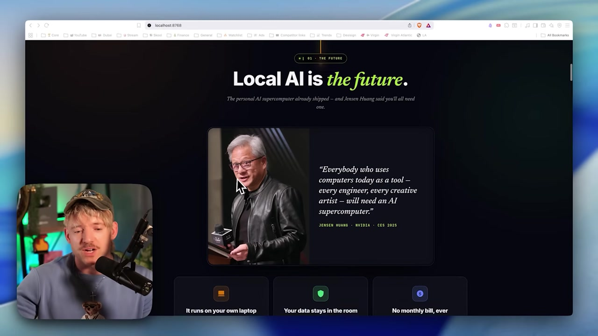

🌍 Por qué la IA local es el futuro
La nube fue adonde se trasladó todo durante la última década. Ahora el movimiento es de regreso: a tu máquina. En este módulo entenderás la «dirección del viaje» de la industria y por qué ejecutar IA localmente dejó de ser un pasatiempo de nerds para convertirse en una habilidad central.
🌍 La dirección es local
Piensa en el teléfono de los años 1990: su propósito era hacer conexiones. Hoy el celular lo hace todo, excepto quizá llamar. Jensen Huang, CEO de NVIDIA, usa esta imagen para decir que lo mismo ocurrirá con la computadora: todos tendremos un supercomputadora de IA personal. La dirección del viaje es clara: la inteligencia está llegando a tu equipo.

🧭 El gran cambio: nube → entorno local
Vivimos el movimiento de todos hacia la nube. Ahora la nube ya es «lo antiguo» y el péndulo vuelve a lo local. Quien aprenda a operar en local hoy se sube a la ola desde el comienzo.
- •Años 1990–2010: todo migra a servidores y centros de datos (la nube).
- •Ahora: hardware personal lo bastante potente para ejecutar modelos capaces en casa.
- •Tendencia: cada profesional con su «supercomputadora de IA».
¿Nuevo por aquí? "Modelo" es el cerebro de IA (el tipo de cosa que funciona detrás de ChatGPT). "Local" quiere decir que ese cerebro funciona en TU computadora y no en el servidor de una empresa. Todo el curso gira en torno a este cambio de lugar.
Conceptos clave
El movimiento estructural de la industria, de la nube a lo local.
La analogía de Jensen: todos con uno, como hoy todos tienen un celular.
Aprender ahora te pone por delante de la curva.
Las laptops y computadoras de escritorio modernas ya ejecutan modelos capaces.
🔒 Ownership: tú eres dueño de la inteligencia
El concepto clave de todo esto es ownership (propiedad). Cuando el modelo se ejecuta en tu máquina, eres dueño físico de la inteligencia y los datos. No se envía nada a OpenAI, Anthropic ni a ninguna otra empresa. La idea es dejar de alquilar inteligencia y pasar a ser su dueño.
✓ Lo que GANAS al tenerlo
- ✓Los datos nunca salen de casa.
- ✓Ninguna empresa observa lo que haces.
- ✓Sin límites de uso impuestos por terceros.
- ✓Sin vendor lock-in: no dependes de un proveedor.
✗ Lo que cobra el modelo «alquilado»
- ✗Tus datos viajan al servidor de la empresa.
- ✗Cuenta mensual y cobro por token.
- ✗Límites de solicitudes y cambios de reglas fuera de tu control.
- ✗Si el servicio se cae o cambia de precio, el problema es tuyo.
Propiedad no significa que nadie vaya a usar la nube nunca; significa que la elección es tuya. Tú decides qué queda privado y qué puede salir. Ese control es la esencia del curso.
Conceptos clave
Tener el modelo y los datos físicamente.
El modelo de los servicios en la nube: pagas por el uso.
Depender de un proveedor; lo local te libera de eso.
Decides qué es privado y qué puede salir.
💸 Costo cero por token
En un servicio en la nube, pagas por token — cada fragmento de texto que entra y sale tiene un precio. Localmente, después de descargar el modelo una vez, cada uso es gratuito, para siempre. No hay ningún medidor en funcionamiento.
📊 Qué cambia en la práctica
- •$0 por token: no lo piensas dos veces antes de pedir más.
- •Sin límite de solicitudes: ningún "alcanzaste tu límite, vuelve mañana".
- •Agentes 24/7: puedes dejar tareas en ejecución todo el día sin preocuparte por la factura.
💡 Consejo práctico
El único «costo» de lo local es el hardware que ya tienes y la energía. Por eso vale la pena descargar, probar y borrar modelos a voluntad: explorar es barato. Tómalo como diversión, no como obligación.
Conceptos clave
La unidad de cobro de la nube (lo detallaremos en el módulo 1.4).
Uso gratuito después de la descarga.
Ningún límite de uso impuesto.
Invierte una vez en el hardware, en lugar de pagar por el uso.
✈️ Funciona sin conexión, en cualquier lugar
Como el modelo se ejecuta en tu máquina, no necesita internet. Puedes estar a 5 mil metros en un avión, en un lugar sin señal o con la red fallando: la IA sigue respondiendo. La disponibilidad deja de depender de una conexión o de que un servicio esté en funcionamiento.
A la izquierda, sin conexión de red, la llamada al el servidor falla; a la derecha, el el modelo local responde incluso sin conexión — la inteligencia está en tu máquina, no al otro lado de Internet.
Historia real del video: volando de Dubái a LA, con Internet todavía sin configurar, podías seguir trabajando con el modelo local en la laptop. Ese es el tipo de libertad que ofrece el modo offline.
Conceptos clave
La IA siempre está ahí, sin depender de la red.
Un servicio fuera de línea o un corte de luz no te paralizan.
Avión, sin conexión, zona sin señal: todo funciona.
El cómputo ocurre donde estás.
🏢 Casos reales: datos sensibles y cumplimiento
Para mucha gente, lo local no es una preferencia: es necesidad. Cuando trabajas con datos de clientes, finanzas, notas de salud o código propietario, enviar esa información a un servicio externo puede estar prohibido por ley o por contrato. Ejecutarlo localmente resuelve el problema de raíz: el dato nunca sale.
Datos de clientes y finanzas
Información que no puede filtrarse a terceros: se queda 100% en la máquina.
Salud e IP propia
Notas de salud y secretos de negocios (el «OpenAI 2.0» que nadie puede saber).
Entornos regulados
SOC 2, GDPR, ISO 27001 — el cumplimiento es mucho más sencillo cuando los datos no circulan.
¿Nuevo por aquí? "Compliance" es cumplir con reglas y leyes (de privacidad, seguridad, etc.). "GDPR" es la ley europea de protección de datos; "SOC 2" e "ISO 27001" son certificaciones de seguridad de la información. El uso local facilita todo esto porque los datos simplemente no salen.
Conceptos clave
Mantienes el control total sobre dónde viven los datos.
Un agente para todo el equipo, con datos de clientes aislados.
SOC 2, GDPR, ISO 27001 se vuelven más sencillos.
Sectores donde enviar datos fuera simplemente no es una opción.
🧭 Sin ideología: la herramienta adecuada para cada tarea
Aquí viene la honestidad que guía el curso: lo local no es una religión. La filosofía es simple: trae lo mejor para el trabajo y cámbialo cuando algo deje de ser lo mejor. Cuando los modelos de frontera (en la nube) ofrecen más para una tarea difícil, úsalos. Cuando la privacidad o el costo pesan más, usa un modelo local.
⚠️ El error que debes evitar
Ser ideológico («siempre local» o «siempre en la nube») te hace perder. Forzar el uso local en una tarea que exige la máxima potencia frustra; enviar datos sensibles a la nube por pereza puede ser ilegal. El criterio es el trabajo, no la bandera.
🧩 Piensa en porcentajes
Imagina el 100% de tu trabajo con IA. Una parte requiere privacidad absoluta (datos de clientes). Otra requiere la mejor respuesta posible (un problema complicado). Otra solo necesita ser rápida y barata. Cada parte tiene la herramienta ideal, y Hermes te permite alternar entre ellas.
En el módulo 1.6 eso se convierte en los tres modos (Vault, Connected, Cloud), y en la Trilha 3 montas el flujo que alterna entre ellos.
Conceptos clave
"Sigue lo que funciona", sin dogmas.
Local y nube coexisten en el mismo flujo.
Cada parte del trabajo requiere algo diferente.
Los modelos de vanguardia (en la nube) todavía ganan en las tareas más difíciles.
Autocomprobación (opcional): ¿qué frase resume mejor la filosofía del curso?
🎯 Resumen del módulo
Siguiente módulo:
1.2 — El vocabulario: LLM, agente y SO de IA